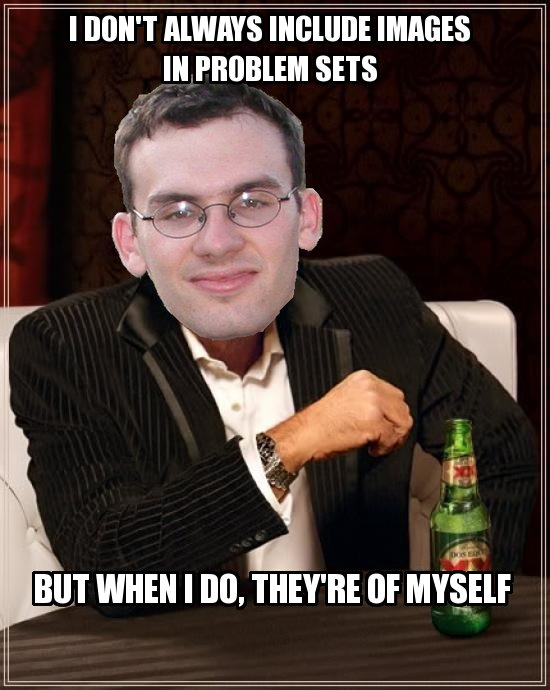
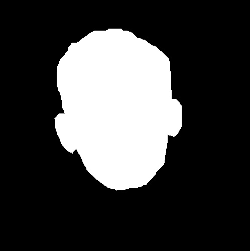

For our artifact, we created a variation on the popular "Most Interesting Man in the World" meme. We used the "snavely_m" mask to cut out Professor Snavely's face from the provided "snavely" image, then layered it on top of a meme template, downloaded from a meme generator website, using GIMP. We scaled and moved the layer containing Snavely's face to fit the head in the template image, and then added layers for the Impact font caption and its black border.
Below is our artifact.
This is the meme template we used.

This is the image of Professor Snavely.

This is the mask we used to cut out Professor Snavely's face.
